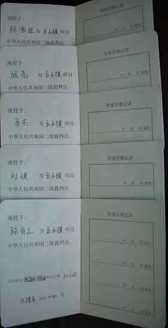
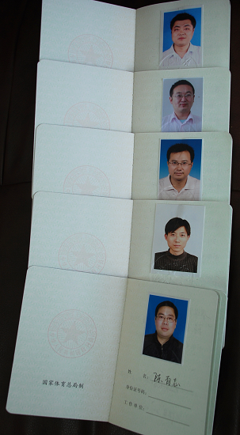
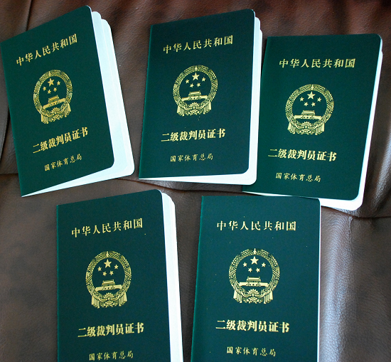

南通五人获得五子棋二级裁判资格
首页
江苏五子棋
#1 南通五人获得五子棋二级裁判资格 作者：有志青年 发表时间：2012-3-14 11:01:46
为促进南通市五子棋运动的深入开展，加强裁判员队伍的建设，提高本地区五子棋裁判员综合水平，培养选拔年轻裁判员，南通市体育局于2011年组织举办了五子棋裁判员定级考试，最终共计五人获得五子棋项目国家二级裁判员资格。



［此帖子已被 有志青年 在 2012-3-14 11:08:33 编辑过］
#2 Re:南通五人获得五子棋二级裁判资格 作者：五子天涯 发表时间：2012-3-15 11:11:59
祝贺南通五人获得五子棋二级裁判资格 ！
#3 Re:南通五人获得五子棋二级裁判资格 作者：黄民城 发表时间：2012-3-16 19:42:51
恭喜恭喜!!祝贺!祝贺!